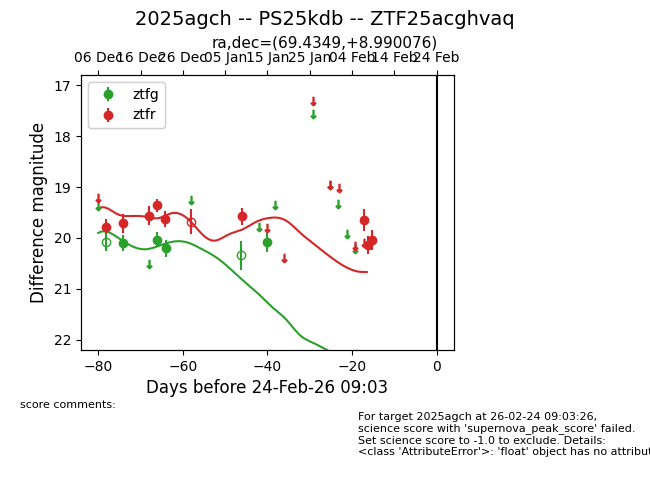
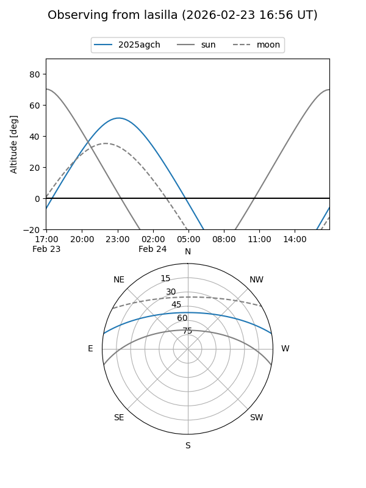
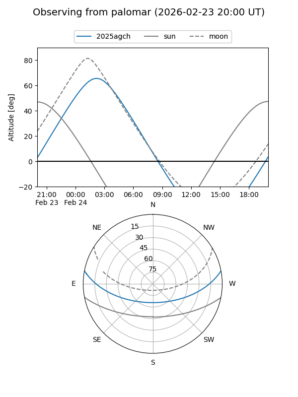
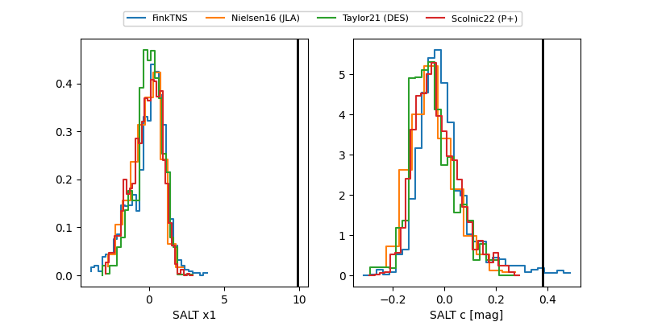

2025agch
Target 2025agch at 2025-12-29 20:04
Aliases and brokers:
FINK: fink-portal.org/ZTF25acghvaq
Lasair: lasair-ztf.lsst.ac.uk/objects/ZTF25acghvaq
ALeRCE: alerce.online/object/ZTF25acghvaq
TNS: wis-tns.org/object/2025agch
YSE: ziggy.ucolick.org/yse/transient_detail/2025agch
alt names
ZTF25acghvaq (ztf,fink_ztf)
2025agch (tns,yse)
PS25kdb (panstarrs)
Coordinates:
equatorial (ra, dec) = 69.4349,+8.98999
equatorial (HMS+DMS) = 04:37:44.38,+08:59:23.97
galactic (l, b) = (187.7749,-24.39119)
Flags:
Photometry:
last ztfg=20.21, ztfr=19.63
3 ztfg, 5 ztfr detections
Lightcurve

Visibility


Additional plots
